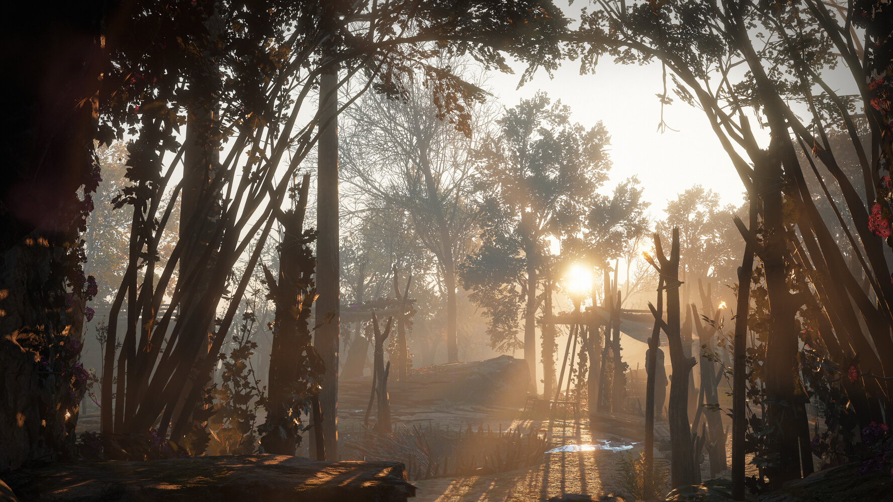

Приветсвую всех на своём WIKI сайте по 3D. Здесь вы узнаете что такое 3D модделирование, основные понятия, виды моделлинга, основные сайты, какие программы использовать, как люди на этом зарабатывают и многое другое.
Что такое 3D моделирование – это процесс формирование виртуальных моделей, позволяющий с максимальной точностью продемонстрировать размер, форму, внешний вид объекта и другие его характеристики. По своей сути это создание трехмерных изображений и графики при помощи компьютерных программ. Современная компьютерная графика позволяет воплощать очень реалистичные модели, кроме того создание 3D-объектов занимает меньше времени, чем их реализация. 3D технологии позволяют представить модель со всех ракурсов и устранить недостатки выявленные в процессе её создания.
3D МОДЕЛИРОВАНИЕ : ОБЩИЕ ПОНЯТИЯ
Визуализация объектов с помощью компьютерных программ позволяет лучше представить будущий проект в реальности. Такие модели производят глубокое впечатление, и дают возможность добиться потрясающих результатов. Моделирование с помощью 3D технологий отличное решение для многих промышленных, строительных, ювелирных предприятий, а в особенности дизайнерских студий и развлекательной индустрии. 3D моделирование, визуализация и анимация объектов занимают главное место в реализации многих бизнес-проектов.
ВИДЫ МОДЕЛИРОВАНИЯ
– воксельное, используется в основном в медицине в качестве сканеров или томографов;
– полигональное, универсально и используется во многих областях, с помощью него создаются модели для любых предназначений.
При выборе технологической составляющей 3D моделирования стоит ориентироваться на имеющееся программное обеспечение. Многообразие и характерные особенности компьютерных программ заслуживают отдельного внимания. Правильно выбранный функционал ПО поможет безошибочно выполнить любой проект. Например в 3D max моделировании трудно выполнить развертку и корректно наложить текстуру на объект, но вы с легкостью сможете найти инструменты для их выполнения в другой программе.
Проекты с большим уровнем сложности имеют разделение на визуализацию и моделирование, поэтому для данной работы необходимо иметь определенный объем навыков и знаний.
ПРОГРАММЫ ДЛЯ 3D МОДЕЛИРОВАНИЯ
На сегодняшний момент разработаны различные программы для 3D моделирования. Их список постоянно пополняется, ведь компании создающие данное ПО хотят охватить как можно большую аудиторию потребителей, поэтому с появлением новых потребностей к специфике программы, они создают новые приложения. Среди них существуют как платные, так и бесплатные программы для 3D моделирования. К лидерам первой категории относятся 3D max, Maya, AutoCad, Cinema 4D, Компас 3D, Rhinoceros, а ко второй стоит отнести Blender 3D моделирование, Wings3D и Google SketchUp. Рассмотрим более детально каждый из этих продуктов:
3D max – популярнейшая программ, является профессиональной и имеет полноценный функционал. Используется для создания мультипликационного монтажа, анимации и трехмерной графики. Имеет ряд инструментов для создания моделей различной сложности. С её помощью можно получить любой виртуальный объект с точностью до мелочей и в последствии применить к нему анимацию. Есть платная и бесплатная студенческая версии программы.

Maya – профессиональное ПО используемое кинематографом и разработчиками игр. Она имеет разнообразные ресурсы для получения качественных и реалистичных 3D- моделей.
AutoCad – создана для впечатляющего 2D и 3D моделирования и выпускается на 18 языках. Здесь проработанный и понятный даже новичку интерфейс. В ней можно воссоздать модель при помощи 2D инструментов, а в последствии дополнить её в трехмерном функционале. Также можно моделировать отдельные объекты и целые комплексы, а также создавать текстуры для игр.
Cinema 4D– универсальная программа разработанная для трехмерного моделирования и анимации. Имеет различный функционал и обладает простым интерфейсом, к тому же он имеет русский язык, что несомненно делает ее очень популярной среди русскоязычных потребителей.
Компас 3D– ПО для объемного моделирования. Она имеет математическое ядро и замечательно подходит для реализации инженерных проектов. Программа может не только построить модель, но и выполнит расчеты и анализ для дальнейшего её изготовления. Имеет поддержку русского языка.
Rhinoceros– используется для 3D моделирования в архитектуре, проектировании кораблей, в разработке дизайна для ювелирных организаций и автопрома, а также мультимедиа. Свою популярность она получила благодаря богатому функционалу и возможности импорта и экспорта файлов различного формата.
Blender – программа для 3D моделирования, рендеринга, анимации, монтажа и постобработки. Кроме имеющего функционала, она сможет поддерживать другие плагины, которые помогают увеличить её возможности. Имеет файл для начинающих обучение 3D моделированию.
Wings3D– самая простое ПО для трехмерного моделирования, в которой можно работать с несложными моделями. Минимальный и доступный интерфейс значительно облегчает работу начинающим специалистам. Кроме этого при помощи открытого кода программу можно модифицировать.
Google SketchUp– позволяет создавать и редактировать различные варианты моделей. При мощи данной программы к ним можно добавлять новые элементы и текстуры. Обладает широким набором инструментов для создания объектов различной сложности.
Представленный список программ является далеко не полным и при желании профессионально заниматься и получить необходимые уроки 3D моделирования вы можете самостоятельно подобрав подходящее ПО. Трехмерное моделирование – это поистине уникальная технология, за которой лежит будущее многих бизнес-проектов. Оно предоставляет всему человечеству потрясающие возможности воплощения в полной мере будущего объекта. Внедрение таких технологий ведет к экономии ресурсов, упрощению работ и расширению возможностей.
ОСНОВНЫЕ САЙТЫ ДЛЯ 3D-МОДЕЛИРОВАНИЯ
Онлайн сервисы для работы с 3D проще профессиональных программ, но для работы со многими из них всё равно требуются некоторые знания о создании трёхмерных проектов. Но встречаются и сервисы, для работы с которыми специальной подготовки не требуется, чаще всего это касается сайтов для работы с дизайном интерьера.
Tinkercad
Некоторые называют Tinkercad онлайн версией популярного специализированного приложения 3DMax. Оба этих программных продукта разработала одна компания – Autodesk.
Tinkercad бесплатен и дружелюбен к начинающим пользователям. Он использует комплексные объекты, которые состоят из простых форм. Можно использовать готовые формы или загружать свои собственные. Имеющиеся формы можно перемещать или вращать. Также есть возможность устанавливать необходимые размеры. Кроме этого можно создавать новые формы, объединяя уже имеющиеся. Используя встроенный модуль «Цепи» можно проектировать электронные устройства. С помощью этого сервиса можно не только проектировать, но и создавать программы, с помощью которых создаются динамические, адаптивные 3D формы.
На официальном сайте TinkerCard можно найти инструкции, обучающее видео и другой полезный для новичков контент, который поможет освоить моделирование максимально быстро. В разделе сайта «Галерея» можно ознакомиться с работами других пользователей.
Данный сервис поддерживает наиболее распространённые форматы файлов, используемые для трёхмерной печати. После создания 3D-модели её можно скачать и распечатать. Интерфейс Tinkercad русифицирован.
3D Slash
3D Slash подойдёт тем, кто хочет получить больше возможностей, чем предоставляет сервис Tinkercad. Он предоставляет больше инструментов для обработки 3D-моделей, например, средства для «гравировки», сверления отверстий, изменения цвета и многие другие.
Простой пользовательский интерфейс помогает новичкам быстро начать работу, также на официальном сайте можно найти обучающие материалы.
В бесплатной версии доступно всего 8 цветов, отсутствует возможность совместной работы над проектом, нельзя создавать папки для организации моделей, загрузить файлы можно только в низком разрешении. Также запрещается коммерческое использование созданных 3D-моделей. Русский интерфейс отсутствует.
Planner 5D
Planner 5D -это условно-бесплатный онлайн-сервис, предназначенный для разработки дизайна помещений. Он был запущен в сентябре 2012 года, а уже в ноябре 2013 года у него было 2 000 000 зарегистрированных пользовательских аккаунтов.
Используя Planner 5D не сложно спроектировать любой интерьер с помощью готовых проектов, к которым можно добавить мебель, полы, картины, часы и другие элементы. Также можно создать проект дома у моря и спроектировать ландшафт возле него. Кроме этого можно создать дизайн кафе или тренажёрного зала.
Также можно загрузить план комнаты, оцифровать его и построить модель, с которой можно будет работать. Не сложно сделать перепланировку квартиры или дома, изменить расположение стен, окон, дверей и менять площадь комнат.
Среди достоинств этого сервиса можно назвать простой, интуитивно понятный пользовательский интерфейс, наличие различных каталогов и подкаталогов с множеством предметов интерьера, а также реалистичность созданных изображений.
Planoplan
Planoplan– это онлайн-приложение для 3D-дизайна, которое предоставляет полный набор инструментов для создания дизайна комнаты. Для начала работы с этим инструментом не требуется обучение. Профессиональному дизайнеру потребуется 2 часа на изучение программы. А новичок будет чувствовать себя уверенно и комфортно после одного дня работы с программой.
В бесплатной версии Planoplan можно найти более 5 тысяч различных предметов интерьера, их можно масштабировать, перекрашивать, устанавливать матовое или глянцевое покрытие. Также можно загружать модели. Бесплатно можно хранить только один проект одноэтажного дома, площадью не более 350 квадратных метров.
Roomtodo
Roomtodo – это функциональный и простой сервис, предназначенный для создания плана дома или офиса. Программа бесплатна для личного использования. Сайт поддерживает три языка: украинский, русский и английский. Систем измерения тоже 2: сантиметры и дюймы. Библиотека пока не очень разнообразна. Но можно добавлять модели из других редакторов. В Roomtodo нельзя создавать многоэтажные проекты, поэтому придётся делать каждый этаж отдельно. Сохранять результат работы можно, как на сайте, так и на персональном компьютере, в виде картинки.
СПОСОБЫ ЗАРАБОТКА НА 3D-МОДЕЛИРОВАНИИ
Существует множество сфер, где используется 3D-моделирование. Игровая индустрия — одна из них, но его применяют также в киноиндустрии, рекламном бизнесе, в 3D-печати и даже для медицинских исследований. И большинство этих сфер дают возможности для заработка тем, кто специализируется на создании трёхмерных моделей.
Работа в студии
Самый очевидный и привычный для многих соискателей вариант. Игровая компания, фирма по аутсорсу в области анимации или рекламное агентство — студий, где навыки работы с 3D окажутся полезны, предостаточно. При этом в некоторых можно выбрать график — работать с полной или частичной занятостью.
Список задач в студии будет зависеть не только от сферы, в которой предстоит работать, но и от размера коллектива. Так, в инди-команде на несколько человек вы с большой вероятностью будете отвечать за весь арт.
В больших же студиях существуют узконаправленные арт-отделы. К примеру, можно стать VFX-художником и специализироваться на груминге — и в этом случае предстоит создавать правдоподобную шерсть зверей в 3D-среде. Учитывая, сколько персонажей в играх и кино вдохновлены животным миром, без работы такой специалист точно не останется.
«Вы можете делать модели, которые используются в играх и кин о. Работать как штатный сотрудник или фрилансер. На самом деле, здесь нет привязки к конкретной сфере: можно работать одновременно в киноиндустрии и геймдеве. Сотрудник и работодатель могут договориться о любой форме сотрудничества».
Антон Морозов,
Креативный директор BH Studio
Beast Hour — PvP‑игра студии Антона Морозова BH Studio
Работа в студии
Многие 3D-художники выбирают фриланс как постоянную форму заработка. Кардинальные отличия от работы в студии в том, что на фрилансе у сотрудника будет меньше постоянства и больше свободы. Не будет чёткой привязки к одному работодателю, постоянного коллектива и установленного графика. Придётся самостоятельно искать заказчиков, планировать рабочее время и договариваться о стоимости выполненной работы.
Часто студии привлекают внештатных специалистов, работающих на фрилансе, для выполнения конкретных узкоспециализированных задач. А основные этапы пайплайна при этом выполняют штатные художники.
Для фрилансера важно прокачивать софт-скиллы, чтобы добиться ощутимых результатов в работе. Ему предстоит общаться с разными людьми — коммуникативность и навыки ведения переговоров очень пригодятся. Также полезно будет развивать соцсети, активно общаться с комьюнити, заводить связи — всё это поможет в построении карьеры.
Такому специалисту нужно быть готовым к поиску заказов вновь и вновь, составлять пул клиентов и расширять портфолио. В дальнейшем это очень поможет.
Продажа ассетов
Некоторые художники, помимо работы с заказчиками, самостоятельно создают модели и выкладывают их на стоках для продажи. Подобная модель может работать как пассивная форма заработка, если вы уже сотрудничаете со студией.
Набор ассетов растений
Впрочем, если скиллы позволяют и вам удаётся в короткие сроки создавать множество высококачественных моделей, вы можете превратить работу с маркетплейсами в основной заработок. Вот самые популярные площадки, где можно продавать готовые ассеты:
- Marketplace,
- UE Marketplace,
- CGtrader,
- Unity Assetstore,
- Turbosquid.
Сколько зарабатывают?
Если заниматься только моделированием, то Junior 3D Artist — опыт работы до года — может зарабатывать около 40 000—60 000 Р, Middle 3D Artist — опыт 2—4 года — 80 000—100 000 Р. Senior 3D Artist — опыт работы около 6 лет — может получать 1000—150 000 Р. А если быть еще программистом, который пишет скрипты в игровом движке, то при опыте работы около 5 лет можно получать и 200 000—280 000 Р в месяц.